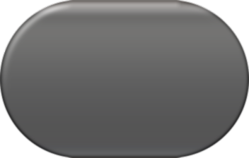
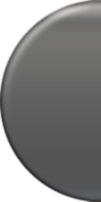
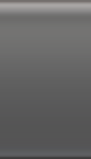
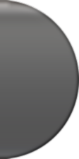

Liquid Glass · 4× Assets
Built to Apple's web typography: SF Pro, 17px body, 56px button. Width follows the label — no fixed width. Assets are 4× and the middle slice tiles forever.
Hover a button — the rim refracts what is behind it.
No `width`. One set of three-slice assets; the longer the label, the wider the button, while the caps stay the same size.
On a light surface the glass reads lighter; the tint keeps the label legible.
Assets are 224px tall (4×, shown at 56px). Caps are 112px each, the middle tile is 128px; seams are pixel-identical.




mid · repeat-x · any width, no distortion
One element does the nine-patch stretch; hover and active swap the SVG filter.
.btn {
display: inline-flex; align-items: center; gap: 9px;
height: 56px; width: auto; /* width comes from the label */
border: 0 solid transparent;
border-left-width: 28px; border-right-width: 28px;
border-image: url(./assets/glass/black-sheet.webp) 0 112 0 112 fill stretch;
border-radius: 980px; color: #fff;
backdrop-filter: url(#glass-1) blur(6px) contrast(1.15) saturate(170%);
}
/* displacement map + filter template: ./assets/glass-filters.svg */
SF Pro Display / SF Pro Text; 17px/1.47 body, letter-spacing -0.022em; 48px/1.08 headings.
56px tall (48px on mobile), 28px caps, 980px radius, 20px icon.
4×: 224px tall, 112px caps, 128px tile; lossless WebP keeps transparency.
24px SVG sources, minified with SVGO, rendered at 20px.